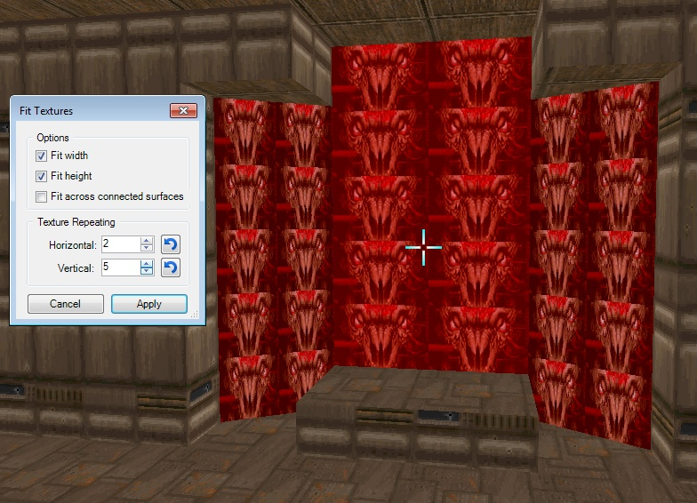

Action name: Fit Textures.
Action category: Visual Modes.
Default key: Ctrl-Alt-A.
This action allows you to align textures to selected surfaces in Visual mode. "Fit across connected surfaces" setting controls whether adjacent surfaces sharing the same texture are threated as a continuous surface.
Examples:
Initial setup:

Examples of various settings in action:


